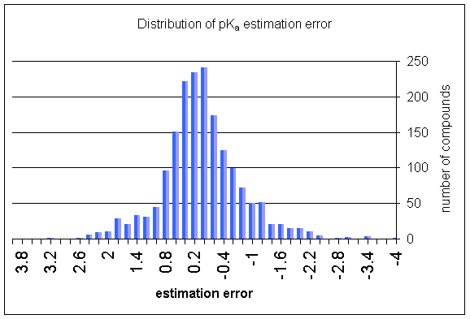
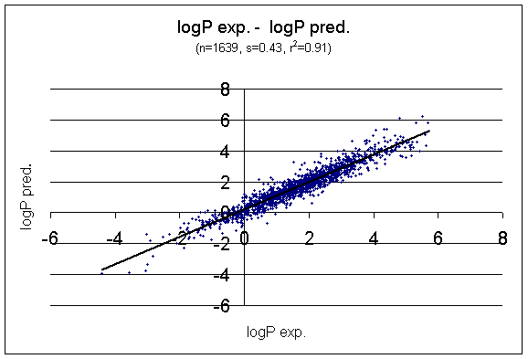
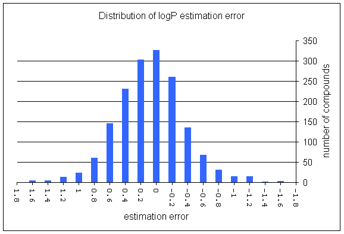
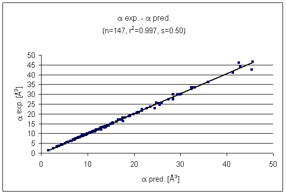
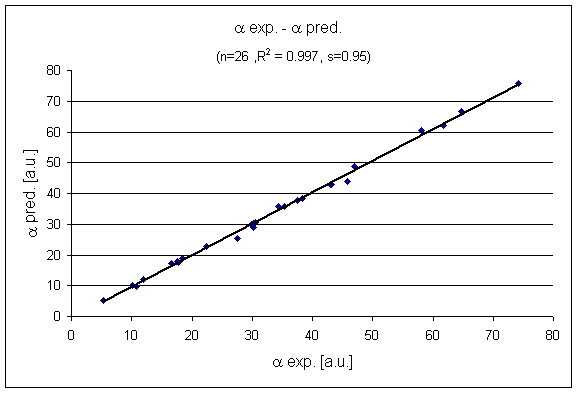
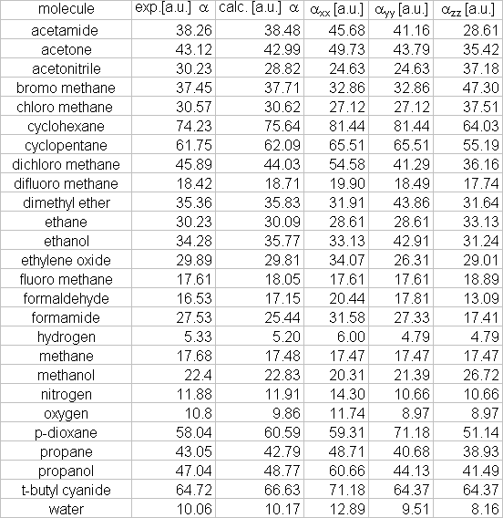

- Test of pKa prediction
- Test of logP prediction
- Test of average molecular polarizability prediction
- Test of 3D molecular polarizability prediction
- References
- Notes


2. Test of logP prediction

Distribution of logP estimation error





A study comparing various pKa calculation results versus the measured pKa values of compounds was published by John Manchester et al. Read the article here.
- PHYSPROP© DATABASE
- Klopman, G.; Li, Ju-Yun.; Wang, S.; Dimayuga, M.: J.Chem.Inf.Comput.Sci., 1994, 34, 752; doi
- Miller, K. J.; Savchik, J. A.: J.Am.Chem.Soc., 1979, 101, 7206-7213; doi
- Piet Th. van Duijnen.; Swart, M.: J.Phys.Chem. A, 1998, 102, 2399-2407; doi
- 3D geometries of molecules were generated with Marvin.
Return to Top